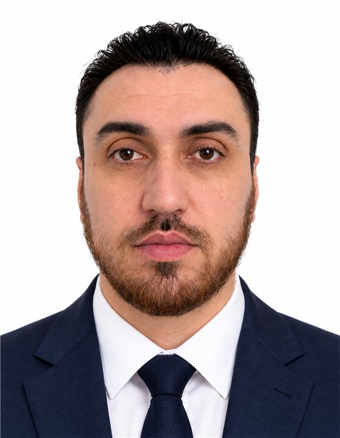

📡
Monitoring & rejeu des flux
Application Nuxt.js pour superviser les flux inter-applicatifs et gérer le rejeu des flux en erreur.
sourcefluxrejeu ↺
Nuxt.jsVue.jsMonitoring
>
Plus de 15 ans à construire le web, de Symfony 1.0 au Drupal headless avec front Next.js. Aujourd'hui en mission chez Groupe Agrica sur des architectures découplées Drupal, Next.js et Nuxt.js.

↻ version photo ⚡ Next.js · Nuxt.js 🧩 Drupal headless 🔐 SSO · KeycloakPassionné, curieux et rigoureux, je combine une solide expertise technique et un vrai sens du relationnel. De l'analyse du besoin jusqu'à la CI/CD, j'aime concevoir des architectures solides et livrer des produits qui tiennent la route.
depuis mars 2019 · Assurance agricole · indépendant depuis 2024
Application Nuxt.js pour superviser les flux inter-applicatifs et gérer le rejeu des flux en erreur.
Architecture découplée : Drupal en mode headless comme back-office de contenu, front Next.js.
Application Next.js de gestion des échanges entre partenaires, sécurisée par une authentification Keycloak.
Initialisation des configurations Maven, Jenkins et SonarQube.
Site public, site privé et module de vente de produits d'assurance (portail partenaire).
Développement et Administration des Bases de Données · Faculté des Sciences, Oujda
Sciences Mathématiques et Informatique · Faculté des Sciences, Oujda
Lycée Lalla Asmae, Oujda